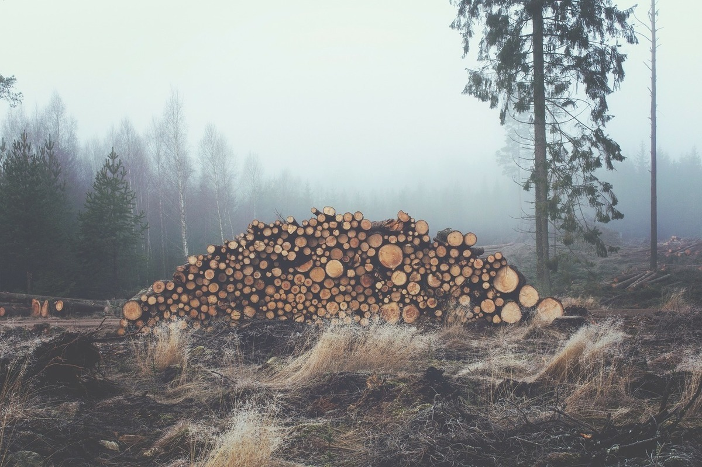
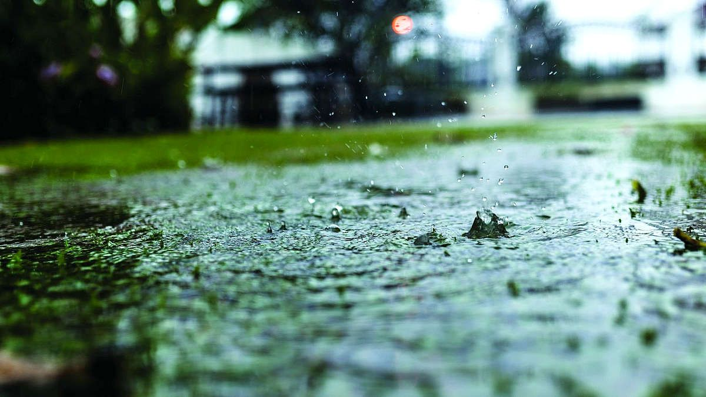

Темы

.png)
Сокращение площади лесов
Исчезновение лесов – это мировая экологическая проблема. Обезлесивание планеты приводит к резким температурным перепадам, изменениям в количестве выпадающих осадков и скорости ветров. Сжигание лесов вызывает загрязнение воздуха окисью углерода, его выбрасывается больше, чем поглощается. Также при сведении лесов поступает в воздух углерод, скапливающийся в почве под деревьями. Что такое обезлесение? Процесс превращения лесных угодий в поля, пашни, карьеры, ЛЭП, города и другие объекты, где отсутствуют лесные экосистемы, называется обезлесением. К обезлесению приводит чрезмерная вырубка лесов, выжигание под пашню, большой вред наносят кислотные дожди, лесные пожары, насекомые-вредители. Каждый год площадь лесов сокращается на 2–3 миллиона гектаров, что ведет к обезлесению.
Основные причины сокращения лесов:
- промышленная заготовка древесины;
- сведение лесов с целью освобождения площадей для нужд сельского хозяйства;
- дорожное и жилищное строительство.
Последствия вырубки лесов:
- сокращение водоносности рек, высыхание озёр, понижение уровня грунтовых вод;
- усиление эрозии почв;
- более засушливый и континентальный климат;
- увеличение выбросов углекислого газа в атмосферу и усиление парникового эффекта;
- исчезновение видов живых организмов.
Массовая вырубка лесов приводит к гибели животных или полному исчезновению многих видов. Лесные растения используются в медицине, на основе их свойств разрабатываются новые препараты. Здоровый лес является важным фактором влияния на распределение воды в почве, не допускает заболачивания и сохраняет нужный уровень грунтовых вод, препятствуя иссушению площадей. Леса, испаряя влагу, создают условия для концентрации облачности и возвращения испаряемой воды в виде дождя. От уничтожения лесов пострадает все человечество, так как не будет природного фильтра, очищающего воздух.

Загрязнение морей и океанов
Загрязнение морей и океанов — глобальная проблема, которая требует безотлагательного решения. Вот некоторые причины загрязнения:
- Избыток углекислого газа, который нарушает баланс химических соединений в океанических экосистемах и повышает кислотность вод.
- Стоки удобрений с полей, которые обогащают моря питательными соединениями и приводят к появлению «мертвых» зон.
- Химические отходы бытовых хозяйств и промышленности, которые накапливаются в телах животных и передаются по пищевой цепи.
- Добыча полезных ископаемых и разливы нефти.
- Пластиковое загрязнение, которое приводит к образованию островов из пластиковых отходов в Мировом океане.
Охрана морских экосистем и строгий контроль антропогенной нагрузки должны стать приоритетными целями всего человечества. Реакция Мирового океана на загрязнение или последствия загрязнения. Мировой океан реагирует на загрязнение по-разному. Экологами разных стран наблюдается:
- постепенное исчезновение различных представителей флоры и фауны;
- цветение воды из-за размножения водорослей, приспособившихся к загрязнению и питающихся промышленными отходами;
- исчезновение глобальных климатических явлений, например, течения Эль-Ниньо;
- появление мусорных островов;
- повышение температуры воды в Мировом океане.
Все эти реакции могут привести к сокращению выработки кислорода Мировым океаном, сокращению его пищевой ресурсности, привести к масштабным изменениям климата на планете, к повышению риска развития засух, наводнений, формирования цунами. Большинство экологов воспринимают загрязнение Мирового океана как глобальную экологическую проблему. У Мирового океана есть и механизмы самоочищения вод: химический, биологический, механический, но в результате их запуска загрязняется дно океана и тысячами гибнут его обитатели. Охрана Мирового океана Серьезное загрязнение вод Мирового океана и уменьшения его ресурсности стало очевидно и понятно в последний период “холодной войны”. С 70-ых годов XX века работают различные региональные программы, объединяющие более 150 стран и обеспечивающие защиту вод морей и океанов. В 1982 году на конференции ООН была принята конвенция по морскому праву.

Загрязнение атмосферы:
Загрязнение атмосферы — это глобальная проблема, которая заключается в наличии вредных веществ в атмосфере. Источниками загрязнения могут быть автомобили, заводы, электростанции, а также природные явления, такие как лесные пожары и извержения вулканов. Загрязнение воздуха наносит огромный ущерб окружающей среде и здоровью людей. Оно может вызывать респираторные болезни, болезни сердечно-сосудистой системы, диабет и онкологические заболевания. Для решения проблемы необходимы коллективные усилия. Во всём мире страны реализуют политику по сокращению выбросов, продвижению экологически чистой энергетики и улучшению стандартов качества воздуха. Вечерами и по выходным миллионы людей отправляются в парки, лес, на природу. Просто подышать свежим воздухом. По данным ЮНЕП (Программа ООН по окружающей среде), загрязнение воздуха — одна из самых опасных экологических угроз. Почему так? Во-первых, существует огромное количество источников загрязнения: это и обычная печка у дедушки в деревне, и любой завод, и аже ваш новенький автомобиль, который ездит на «экотопливе» — более чистом, но все равно загрязняющем воздух. Во-вторых, эта проблема неосязаема, но несет реальные риски. Как правило, сложно заметить, что воздух, которым мы дышим, «какой-то не такой». Тем временем, вредные вещества, которыми он насыщен, неизменно попадают в организм, вызывая различные негативные процессы. И этим дело не ограничивается. Основные вредные вещества, которые попадают в атмосферу:
- Оксид углерода («угарный газ»)
- Двуокись углерода (углекислый газ)
- Диоксид серы (сернистый ангидрид)
- Оксиды и диоксиды азота.
- Озон
- Углеводород
- Свинец
- Промышленная пыль.
Также существуют факторы антропогенного характера, такие как испытания ядерного оружия, работа теплоэлектростанций, выбросы ядовитых газов с предприятий, работа котельных, разложение мусора и отходов на свалках, пожары, возникающие по вине людей, выхлопные газы транспортных средств, полёты реактивных летательных аппаратов.

Кислотные дожди:
Кислотные дожди вредят лесам, сельскохозяйственным культурам, почве, воде и здоровью человека (через пищу и воду). Такие дожди делают почву неплодородной, а иногда — токсичной. Они повреждают корни деревьев, а также листву и стебли растений. Негативное воздействие кислотных дождей распространяется и на водоёмы с их обитателями. При изменении значения pH в чистых горных акваториях рыба и другие живые организмы могут исчезнуть.
Любая жидкость имеет определенный уровень кислотности — pH. К примеру, в питьевой воде водородный показатель pH должен быть 6,5-8,5 мг/л, а в воде плавательного бассейна — 6,0-9,0 мг/л. Когда значение выходит за пределы этих цифр, у человека могут появиться проблемы со здоровьем. Обычные атмосферные осадки имеют показатель 5,6, но когда они смешиваются с кислотообразующими веществами, то это значение уменьшается и появляется кислотный дождь. На первый взгляд не совсем понятно, чем такие осадки отличаются от обычных и могут ли нанести вред человеку и окружающей среде. Чтобы выяснить природу их появления и значимость в мире, заглянем в научные факты.
Причины образования кислотных дождей:
- Автомобильные газы
- Выбросы в результате сельскохозяйственной деятельности
- Сжигание органического топлива
- Природные явления
- Возможные последствия проблемы кислотных дождей:
- Вред для здоровья человека
- Отрицательное влияние на природу
- Порча неживых объектов
Так как же решить эту проблему?
- Нужно ограничить выбросы оксида азота и летучих органических соединений
- Сократить выбросы серы, кадмия, свинца и ртути
- Постепенно отказаться от этилированного бензина
- Сократить выбросы диоксинов, фуранов, полициклических ароматических углеводородов и гексахлорбензола
- Установить при сжигании медицинских и бытовых отходов предельные значения
- Сократить вредные выбросы вдвое
- Внедрять инновации, позволяющие уменьшить агрессивное воздействие на природу и человека
- Помогать частному бизнесу решать проблемы загрязнения атмосферы
- Стремиться к высоким положительным результатам и вдохновлять на это другие города и страны

Разрушение озонового слоя как глобальная экологическая проблема:
Разрушение озонового слоя — это глобальная экологическая проблема, которая требует немедленных действий. Озоновый слой — это вещественный слой в высших частях атмосферы, который играет важную роль в защите Земли от вредных ультрафиолетовых лучей. Однако в результате деятельности человека, в частности, выбросов вредных веществ в атмосферу, этот слой утрачивает свою прочность и эффективность. Последствия разрушения озонового слоя могут быть катастрофическими для животных и растительности на Земле, а также для здоровья человека. Увеличение количества ультрафиолетовых лучей, проникающих в атмосферу, может привести к увеличению риска рака кожи, повреждению глаз и нарушению иммунной системы человека. Для предотвращения разрушения озонового слоя необходимо принимать меры на различных уровнях: от индивидуальных до государственных.
Исчезновение озонового слоя может привести к очень серьезным последствиям и необратимым процессам в природе.
1) В морской среде первым погибнет планктон, что в дальнейшем приведет к
уменьшению количества рыб и млекопитающих.
2) Для растительности это пагубно разрушением листвы и
высыханием.
3) Для животного мира – появлением разного рода мутаций.
4) Для людей
– чревато проблемами со здоровьем, такими как увеличение раковых заболеваний кожи, повреждения
ДНК, появление массовых расстройств психики из-за нарушения частоты электромагнитного поля Земли,
которое также может произойти по причине сокращения озонового слоя.
5) Кроме того, снижение
плотности слоя озона может повлечь за собой существенные изменения климата, падение урожайности и
животноводства.
Перенаселение:
С ростом численности населения увеличивается потребление ресурсов и выделение отходов, что негативно влияет на окружающую среду. Одним из основных последствий перенаселения является загрязнение окружающей среды. С увеличением числа людей увеличивается количество отходов и выбросов в атмосферу и воду. Это может привести к загрязнению водоемов, почвы и воздуха, что негативно сказывается на здоровье людей и животных.
Чем грозит перенаселение?
Первым высказал свое мнение об угрозе перенаселения Томас Роберт Мальтус
в 1798 году в своей книге. Он считал, что это грозит нехваткой продовольствия в будущем. Это могло
стать правдой, если бы не технологический процесс, который позволяет производить достаточное
количество продуктов питания. Не все эксперты согласны с угрозой перенаселения. Председатель
наблюдательного совета Института демографии, миграции и регионального развития Юрий Крупнов считает,
что рост населения начнет уменьшаться после 2070 года.
Какие существуют последствия
перенаселения?
Конечно, Земля позволяет вместить в себя гораздо больше людей, но даже нынешняя численность наносит вред планете.
Каковы причины перенаселения?
Перенаселение в значительной степени связано с тенденциями, возникшими в результате резкого роста рождаемости в середине XX века. Перенаселение в определённых местах также может быть результатом миграции. Как ни странно, перенаселение территории может происходить без прироста населения. Это может быть результатом того, что население с экономикой, зависящей от экспорта, превышает свою пропускную способность в сочетании с незначительными изменениями в миграции. Это явление получило название «демографическая ловушка».
Как перенаселение влияет на окружающую среду?
Взаимосвязь между перенаселением и воздействием на окружающую среду часто бывает взаимозависимой и сложной. Ниже перечислены некоторые из ключевых проблем устойчивого развития, связанных с перенаселением. Для простоты они перечислены по отдельности, но важно понимать, что связи между ними сложны, что затрудняет управление ими.